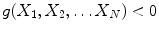
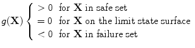
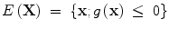
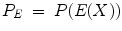
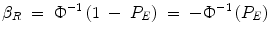
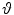
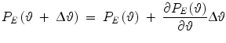
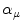
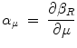

5.1 General
Structural failure of ship and offshore structures may result in loss of human life, severe environmental damage, and large economic consequences. Therefore ship and offshore structures must be designed with adequate safety and reliability, and their designs must be acceptable from an environmental and economic point of view. Environmental data and models represent a necessary and important input to load and response calculations of ship and offshore structures. They should be based on the state-of-the-art met-ocean description. Related relevant uncertainties in met-ocean data and models are also a part of such input.
To ensure that the designs are sufficiently safe and reliable, rules and offshore standards, including met-ocean, are developed by authorities or other competent organisations, such as e.g. Classification Societies. These rules and standards must then be adhered to by designers.
The design practice is moving gradually towards a more consistent probabilistic approach, for example: extremes are determined for a given return period (e.g. expected lifetime of the structure).
The previous chapters how wind and waves conditions may change in the twenty-first century. In the following chapters we show how the anthropogenic climate changes can be included in the current design practice. Particular focus is given to waves which have typically the largest impact on load and response calculations. Further, we demonstrate which consequences the observed and projected changes in wave climate may have on tanker design.
5.2 Climate Change and Variability and Met-Ocean Design Criteria
Multi-decadal natural variability of climate due to the Earth’s system dynamics, short term externally forced climate changes like volcanic activity and short term changes (10–12 years) in solar radiation to some extend have been taken care of in design of ship and offshore structures by considering sufficiently long meteorological and oceanographic data records (typically much longer than 10 years). Note that the natural variability of the time scale larger than 50 years is usually not included in the data sets available for design.
Climate change due long term external forcing such as solar radiation and caused by changes in the Earth’s orbit is neglected in a design process because of the large time scale of its occurrence.
It is, however, important to be aware that the natural climate variability can be of the same order of magnitude as the anthropogenic climate change and may mask it for several years to come. Further, the anthropogenic climate change is affecting the natural climate modes. Palmer (2008) suggests that change due to natural mode swap could be much larger than the direct anthropogenic change. Therefore the next 30–100 years’ climate statistics may be affected significantly by it, a topic which is still not sufficiently investigated.
5.3 Risk-Based Approach Applied in Current Design
The traditional format of Classification Societies’ Rules is mainly prescriptive, without any transparent link to an overall safety objective. IMO (1997, 2001, 2007) has developed Guidelines for use of the Formal Safety Assessment (FSA) methodology in rule development which will provide risk-based goal–oriented regulations. FSA consists of five inter-linked steps given in Table 5.1. When performing FSA for ship and offshore structures it is beneficial to apply Structural Reliability Analysis (SRA) in the risk assessment (step 2) and the cost-benefit assessment (step 4). Using this methodology, state-of-the-art met-ocean descriptions can be explicitly included in the rulemaking process.
Table 5.1
Steps of formal safety assessment (FSA)
Steps | In layman terminology | Professional language |
|---|---|---|
1 |
What might go wrong?
| Hazard identification |
2a |
How often or how likely?
| Frequencies or probabilities |
2b |
How bad?
| Consequences |
2c |
How to model?
| Risk = Probability consequence |
3 |
Can matters be improved?
| Identify risk management options |
4 |
What would it cost and how much better would it be?
| Cost benefit evaluation |
5 |
What actions are worthwhile to take?
| Recommendation |
IMO | What action to take? | Decision |
The risk methodology based on the modern reliability methods is widely spread within the offshore sector.
In the risk based approach each event initiating structure failure may be represented by a limit state function that usually includes several causes responsible for its occurrence. These causes may be correlated or un-correlated.
The basic problem in Structural Reliability Analysis (SRA), see e.g. Madsen et al. (1986), Skjong et al. (1995), Ditlevsen and Madsen (1996) may be formulated as the problem of calculating the (small) probability that where X = (X
1
,X
2
,…X
N
) is a vector of basic random variables and g(
X
) is referred to as the limit state function that describes the failure set, the failure surface, and the safe set, i.e.

(5.1)

(5.2)
g(
X
) is a random variable and its distribution is determined by the g-function and the probabilistic model for the basic variables. The variables describe functional relationships in the physical model and the randomness of parameters in the model. A parameter of a variable may be a function of coordinates of other variables so that a network structure for dependencies between variables can be defined. Statistical dependence between the variables can also be modelled through correlations.
Equation (5.1) describes the physical problem while the random variables and distributions describing them are defining a probabilistic model.
An event, E(
X
), is a subset of the sample space for the stochastic process i.e., a subset of all the possible outcomes of the stochastic process. An event may be defined through a functional relationship The event identifies the outcomes of interest while the random variables X define the nature of a stochastic process.

(5.3)
The event probability, P
E
, is the probability that an outcome of the stochastic process X yields the event E,

(5.4)
In Structural Reliability Analysis the reliability index β
R
is defined to be the argument of the standard normal distribution (Φ) which yields one minus the event probability, and used as a measure i.e. where P
E
is the failure probability.

(5.5)
This basic problem may be transformed into an equivalent problem where the stochastic variables are transformed into a standard-normal-space, i.e. the space of decorrelated normally distributed variables with zero mean and unit standard deviation. This transformation (Rosenblatt 1952) is where x = (x
1
,x
2
,…,x
j
…,x
n
) is the basic vector and u = (u
1
,u
2
,…,u
j
,…u
n
) is the transformed vector, F denotes the cumulative probability function and Φ is the standard-normal distribution.
where x = (x
1
,x
2
,…,x
j
…,x
n
) is the basic vector and u = (u
1
,u
2
,…,u
j
,…u
n
) is the transformed vector, F denotes the cumulative probability function and Φ is the standard-normal distribution.
(5.6)
The reliability methodology allows for consistent treatment of uncertainties and provides probabilities where uncertainties can be included. By adopting SRA sensitivity studies can be carried out and importance of analysed parameters to the failure probability identified. These results may be used in various ways, for example to present risk estimates with and without epistemic uncertainties included.
The sensitivity of a calculated probability (or of the first statistical moments of the g-variable) to changes in one or more parameters in the model can be calculated by use of the Parametric Sensitivity Factor defined as the derivative of the reliability measure (probability or reliability index or statistical moments) with respect to a parameter, say , Hohenbichler and Rackwitz (1986). The change in the failure probability given by a change in a parameter is estimated as The parameter  may be a fixed valued variable or a parameter in a function or a distribution (e.g. a mean value or a standard deviation in a distribution).
may be a fixed valued variable or a parameter in a function or a distribution (e.g. a mean value or a standard deviation in a distribution).

(5.7)
may be a fixed valued variable or a parameter in a function or a distribution (e.g. a mean value or a standard deviation in a distribution).The Uncertainty Importance Factor, defined as the square of the Geometrical Sensitivity Factor, is another parameter which the reliability methods provide. The Geometrical Sensitivity Factor, , is defined to be the derivative of the reliability index β
R
with respect to the mean μ of the corresponding u-space variable, Hohenbichler and Rackwitz (1986). Thus

(5.8)
The Uncertainty Importance Factor indicates the importance of modelling the random variable X as a distributed variable rather than as a fixed valued variable, the median of the distribution being the fixed value. In other words, the Uncertainty Importance Factor of the ith variable roughly gives the fraction of the total uncertainty which is caused by uncertainty in this variable.
Thus the reliability methods allow quantifying in a probabilistic way the uncertainties in the different parameters that govern the structural integrity. This allows reliability assessment of structural components or a structure. Further reliability-based design of a structural component (or a structure) provides a means to satisfy target reliability with respect to specific modes of failure. The probabilistic approach can be used for calibration of partial safety factors in the development of Load and Resistance Factor Design (LRFD) codes (see Ronold and Skjong 2002), and for development of acceptance criteria for structural designs, confer DNV (1992), ISO 2394 (1998), Skjong et al. (1995), Bitner-Gregersen et al. (2002), Skjong and Bitner-Gregersen (2002), Hørte et al. (2007a, b).
Standard software allowing for carrying out structural reliability calculations has been available within the industry since the mid-eighties. Also, complicated non-linear effects can be included by embedding a time domain simulation code in a reliability code, like the probabilistic analysis code PROBAN® (Det Norske Veritas 2002). The program includes the First Order Reliability Method, FORM and the Second Order Reliability Method, SORM which have been introduced to solve the high reliability problems often encountered in the studies of structural safety. These methods are theoretically justified by asymptotic theory and attractive in many applications. For more likely events a number of sampling methods are made also available like Monte Carlo, directional, axis-orthogonal and Latin-Hypercube simulation.
When discussing impact of extreme waves, and met-ocean conditions generally, on marine structures a distinction needs to be made between ship structures and offshore structures. Even though the same basic principles prevail for hydrodynamic loads on ships and offshore structures, actual problems and methods for assessing these loads in the design stage are quite different. Further, different wave data and to some extent different wave models are used for defining design and operational conditions for these two types of structures.
Sailing (non-stationary) ships do not include vessels that operate at a fixed location (e.g. FPSO’s). A salient feature of ship hydrodynamics is the non-zero forward speed. Further, as ships are sailing they are exposed to varying wave environment. This fact needs to be taken into consideration when specifying design and operational criteria.
Unlike ship structures, offshore structures normally operate at fixed locations and often represent a unique design. Therefore site specific environmental data are usually required.
To have a clear and consistent approach for determining design loads, we need to define the limit state categories and the scenarios we design for. In the offshore industry the following well proven terminology (e.g. ISO) is applied which is starting to be accepted also within the shipping industry (see e.g. DNV 1992):
Ultimate Limit State (ULS) corresponding to the maximum load carrying resistance.
Fatigue Limit State (FLS) corresponding to the possibility of failure due to the effect of cyclic loading.
Serviceability Limit State (SLS) corresponding to the criteria applicable to normal use or durability.
Accidental Limit State (ALS) corresponding to the ability of the structure to resist accidental loads and to maintain integrity and performance due to local damage or flooding.
Climate changes of met-ocean conditions will impact all limit state categories but it is expected that ULS and ALS will be most affected.
In the design process, international standards are followed to calculate ship structural strength and ship stability during extreme events. The return period for ship structures is 20 years (ULS). Recently, IMO has increased the design life to 25 years in Goald-Based Standards (GBS) for bulk and tankers with length over 150 m. Accidental Limit State, ALS, (corresponding to the ability of the structure to resist accidental loads and to maintain integrity and performance due to local damage or flooding) checks cover grounding, collision, and fire and explosion. An extreme weather event check is not included in ALS, as explained in Bitner-Gregersen et al. (2003), Hørte et al. (2007a).
Offshore structures (including FPSOs) follow a different approach to design of ship structures and are designed for the 100-year return period (ULS). The Norwegian offshore standards (NORSOK Standard (2007)) requires that there must be enough room for the wave crest to pass beneath the deck to ensure that a 10000-year wave load does not endanger the structure integrity (ALS).
5.4 Risk-Based Approach Including Climate Changes
Design of ship and offshore structures will be affected by changes of surface ocean temperature, wind, waves, sea water level and ice reported by IPCC (2007, 2011, 2012) although sensitivity to the climate changes may vary for different structure types. Attention also has to be given to marine growth on ship and offshore structures, which is expected to increase significantly due to global warming. This development may, however, be compensated by better coating.
Three aspects of met-ocean description in particular need to be considered when discussing possible impact of climate change on design and operations of ship and offshore structures (Bitner-Gregersen and Eide 2010):
- Long-term variations (anthropogenic changes and natural variability) of climate
- Extreme weather events
- Uncertainty modelling
Long-term variations (several decades’ variations) of meteorological and oceanic conditions and their statistical characteristics will affect the currently used met-ocean data bases and, therefore, the design and operation criteria derived for ship and offshore structures. Predicted load and response projections will also be affected. Changes in extreme weather events may impact long-term statistical description of met-ocean environment as well as the current methodology and calculation procedures for prediction of short-term variations (20-min up to 3–6 h) of ship and offshore structures’ loads and responses, and will need to be accounted for. Note that information about long-term and short-term variations of met-ocean conditions is combined in a design process. Specification of uncertainties of climate change projections is essential and will decide accuracy of met-ocean design and operational criteria provided.
It is also important to be aware that changes, like increase in storm activity (intensity, duration and wind fetch) in some regions (still low confidence in these projections, IPPC 2012), may lead to secondary effects such as increased frequency of occurrence of extreme wave events. More intense swell might also be expected. The frequency of occurrence of combined wave systems like wind sea and swell (one, or several swell components) may increase in some ocean areas due to increase of storm intensity and change of storm tracks. Combination of wind sea and swell may consequently lead to more frequent extreme events (Onorato et al. 2006; Shukla et al. 2006; Toffoli et al. 2011b), something not investigated sufficiently. Vulnerability to hurricane storm-surge flooding may increase if the projected rise in sea level due to global warming occurs. These extreme weather events will affect long-term met-ocean statistics and may have impact on current methodology and procedures for load and response calculations.
Climate changes of met-ocean conditions and relevant uncertainties will need to be an integrated part of the risk-based approach as illustrated schematically in Fig. 5.1. Possible inclusion of rogue waves in the risk based approach is discussed by Bitner-Gregersen et al. (2003, 2008). Wave directional spreading will represent an important characteristic of rogue waves needed to be taken into consideration, e.g., Toffoli and Bitner-Gregersen (2011a).
Fig. 5.1
Risk based approach, overview of interfaces and climate change is integrated
Identification of uncertainties and their quantification represents important information for risk assessment of ship and offshore structures (see Fig. 5.1). How to handle uncertainties in a risk based rule and offshore standard format is well established (Madsen et al. 1986), see also e.g. Bitner-Gregersen et al. 2002, and Hørte et al. 2007a, b). The significance of uncertainty modelling of met-ocean conditions will increase when climate change is considered as no field observations will be available for validation of the projected future climate. Uncertainties discussed in Chap. 3 will need to be considered.
Climate change trends have non-stationary character which is not accounted for in current design practice of ship and offshore structures. To be able to design for climate change time-dependent statistical descriptions need to be adopted. Statistical extreme value analysis, as currently used in the met-ocean community, has to be upgraded to take into account the non-stationary character of current climate, in terms of both climate change trends and natural variability cycles. Spatial–temporal models, like the Bayesian hierarchical space–time model e.g., Vanem et al. (2011a, b; Vanem 2012), are expected to play an important role in this development. Climate trends obtained from the climate/wave models as well as Bayesian hierarchical space–time models will need to be incorporated into joint met-ocean description currently used in design. These non-stationary climate change trends will be a part of the risk-based approach as illustrated schematically in Fig. 5.1.
A distinction will need to be made between existing structures and new ones when evaluating impact of climate change on ship and offshore structures design. SRA is recommended to be used for checking whether the existing structures will maintain the same safety level as current design. It is too early to conclude which revisions will need to be introduced in the current ship and offshore structure design and what economic consequences they will have. These considerations will need to be based on cost benefit analysis as illustrated in Skjong and Bitner-Gregersen (2002).
In the following section we demonstrate what impact climate changes may have on current design practice of tankers. The results presented are based on the state-of-the-art knowledge on climate change projections and therefore some revision may be required when new investigations regarding climate change arrive in the future.
References
Bitner-Gregersen EM, Eide LI (2010). Climate change and effect on marine structure design. DNVRI Position Paper No.1 http://www.dnv.com/resources/position_papers/new_frontiers.asp
Bitner-Gregersen EM, Hovem L, Skjong R (2002) Implicit reliability of ship structures. In: Proceedings of OMAE 2002, Oslo, 23–28 June 2002
Bitner-Gregersen EM, Hovem L, Hørte H (2003) Impact of freak waves on ship design practice. In: Proceedings of maxwave final meeting, Geneva, 8–10 Oct 2003
Bitner-Gregersen EM, Toffoli A, Onorato M, Monbaliu J (2008) Implications of nonlinear waves for marine safety. In: Proceedings of rogue waves 2008 workshop, Brest, France, 13–15 Oct 2008, http://www.ifremer.fr/web-com/stw2008/rw/
Ditlevsen O, Madsen HO (1996) Structural reliability methods. Wiley, Chichester, West Sussex
DNV (1992) Classification Note 30.6: structural reliability analysis of marine structures, July 1992
DNV (2002) PROBAN theory, general purpose probabilistic analysis program, the author L. Tvedt, Version 4.4, Høvik, Norway
Hohenbichler M, Rackwitz R (1986) Sensitivity and importance measures in structure relaibility. Civ Eng Syst 3:203–209CrossRef
Hørte T, Skjong R, Friis-Hansen P, Teixeira AP, Viejo de Francisco F (2007a) Probabilistic methods applied to structural design and rule development. In: Proceedings of the RINA conference “development of classification and international regulations”, London, 24–25 Jan 2007
Hørte T, Wang G, White N (2007b) Calibration of the hull girder ultimate capacity criterion for double hull tankers. In: Proceedings of 10th international symposium on practical design of ships and other floating structures, Houston
IMO (1997) Interim guidelines for the application of formal safety assessment (FSA) to the IMO rule making process. MSC Circ.829/MEPC/Circ.335
IMO (2001). Guidelines for formal safety assessment for the IMO rule making process. MSC/Circ.1023—MEPC/Circ.392
IMO (2007) Formal safety assessment, consolidated text of the guidelines for formal safety assessment (FSA), for use in the IMO rule-making process (MSC/Circ.1023—MEPC/Circ.392), MSC83/INF.2
IPCC (2007) Climate Change (2007) The physical science basis. In: Solomon S, Qin D, Manning M, Chen Z, Marquis M, Averyt KB, Tignor M, Miller HL (eds) Contribution of working Group I to the fourth assessment report of the intergovernmental panel on climate change. Cambridge University Press, Cambridge, 996 pp
IPCC (2011) Summary for policymakers. In: Field CB, Barros V, Stocker TF, Qin D, Dokken D, Ebi KL, Mastrandrea MD, Mach KJ, Plattner G-K, Allen S, Tignor M, Midgley PM (eds) Intergovernmental panel on climate change special report on managing the risks of extreme events and disasters to advance climate change adaptation. Cambridge University Press, Cambridge
IPCC (2012) Managing the risks of extreme events and disasters to advance climate change adaptation. In: Field CB, Barros V, Stocker TF, Qin D, Dokken DJ, Ebi KL, Mastrandrea MD, Mach KJ, Plattner G-K, Allen SK, Tignor M, Midgley PM (eds) A special report of working Groups I and II of the intergovernmental panel on climate change. Cambridge University Press, Cambridge, 582 pp
ISO 2394 (1998) General principles on reliability for structures. ISO TC 98/SC 2/ WG 1, 2nd edn 1998-06-01
Madsen HO, Krenk S, Lind NC (1986) Methods of structural safety. Prentice-Hall, Enlewood Cliffs, NJ 07632
NORSOK (2007) Standard N-003: action and action effects, Rev. 2. http://www.standard.no/pronorm-3/data/f/0/03/78/7_10704_0/N-003d2r2.pdf
Onorato M, Osborne AR, Serio M (2006) Modulation instability in crossing sea states: a possible mechanism for the formation of freak waves. J Phys Rev Lett 96:014503CrossRef
Palmer T (2008) Introduction to CLIVAR exchanges. http://www.clivar.org
Ronold K, Skjong R (2002) The probabilistic code optimisation module PROCODE. In: Joint committee on structural safety (JCSS) workshop on reliability based code calibration, Zurich, 21–22 March 2002
Rosenblatt M (1952) Remarks on a multivariate transformation. Ann Math Stat 23:470–472MathSciNetCrossRefMATH
Shukla PK, Kaurakis I, Eliasson B, Marklund M, Stenflo L (2006) Instability and evolution of nonlinearly interacting water waves. J Phys Rev Lett 97:094501CrossRef
Skjong R, Bitner-Gregersen EM (2002) Cost effectiveness of hull girder safety. In: Proceedings of OMAE-2002-28494, Oslo
Skjong R, Bitner-Gregersen EM, Cramer E, Croker A, Hagen Ø, Korneliussen G, Lacasse S, Lotsberg I, Nadim F, Ronold KO (1995) Guidelines for offshore structural reliability analysis—general. DNV Report No 95–2018
Toffoli A, Bitner-Gregersen EM (2011) Extreme and rogue waves in directional wave field. Open Ocean Eng J 4:24–33CrossRef
Toffoli A, Bitner-Gregersen EM, Osborne AR, Serio M, Monbaliu J, Onorato M (2011b) Extreme waves in random crossing seas: laboratory experiments and numerical simulations. Geophys Res Lett 38:L06605, 5. doi: 10.1029/2011
Vanem E (2011) Long-term time-dependent stochastic modelling of extreme waves. Stoch Environ Res Risk Assess 25(2):185–209CrossRef
Vanem E (2012) A stochastic model for long-term trends in significant wave height with a CO2 regression component. In: Proceedings of OMAE 2012 conference, Rio de Janeiro, 1–6 July 2012
Vanem E, Huseby AB, Natvig B (2011b) A Bayesian hierarchical spatio-temporal model for significant wave height in the North Atlantic. Stoch Environ Res Risk Assess 1–24 doi:10.1007/s00477-011-0522-4